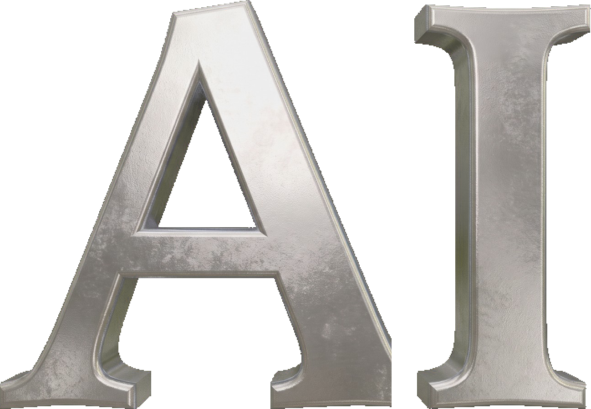

Looks and speaks 
?
One site, two layers
<script type="application/ld+json">
{
"@context": "https://schema.org",
"@type": "HairSalon",
"name": "Maison Mèche",
"description": "Precision cuts and quiet, lived-in color.",
"url": "https://maisonmeche.com",
"priceRange": "$$$",
"openingHours": "Tu-Sa 09:00-19:00",
"aggregateRating": {
"@type": "AggregateRating",
"ratingValue": "4.9",
"reviewCount": 213
}
}
</script>The businesses that adapt their online presence now will pull ahead and grow their customer base.
The ones that wait will quietly lose clients to the ones that did.
An ameizing site keeps you on the right side of that line.
Selected work
Here are some ameizing sites
A few of the worlds we have built.
Each one custom and impossible to scroll past.
What people ask us
The website that wins both your visitors: the person who looks, and the AI that reads.
What is ameizing?
ameizing builds custom websites that do two jobs at once: look striking enough to stop a person in seconds, and carry clean, structured data so AI agents like ChatGPT, Claude and Gemini can read, understand and recommend the business. Every site is built for both readers, the human and the machine, and ships in up to four languages.
What do you deliver?
A complete custom website: original design and writing, built, hosted and maintained for you. Under the surface it carries schema.org structured data, an llms.txt file and machine-readable business facts, your services, hours and reviews, so AI agents can parse exactly what you do. Nothing generic, and nothing you have to touch.
Who is it for?
Service businesses and brands that are judged by their first impression and need to be found: salons and studios, hospitality, real estate, local trades, personal brands. If people decide in seconds whether to trust you, and AI is starting to recommend businesses like yours, ameizing is for you.
What languages, and how do I start?
We build in English, Hebrew (full right-to-left), Spanish and German, in any mix, from one site, each written natively rather than machine-translated. To start, run the free scan of your current site, or message us on WhatsApp and we will take it from there.
Can't I just build this myself with Lovable, Base44 or Wix AI?
You can make a site with those in an afternoon. But the hard part was never the typing, it is taste and the AI layer. Those tools hand you a generic result unless you already know exactly what great looks like, and they build JavaScript-heavy sites that ChatGPT and Claude cannot actually read. You would spend your time building the one thing that hides you from the AI we are here to make you visible to. We do the opposite, on purpose.
Does AI readability really matter for my business?
It is already happening. When someone asks ChatGPT who is a good business like yours nearby, names come back. If your site is invisible to it, you are not one of them, and you never find out the lead existed. Want proof? We scan your current site for free and show you exactly what the AI can and cannot see.
I already have a website.
Good, let us look at how it reads. Most sites built in the last few years look fine to people and are silent to machines. In a few minutes we can tell you whether yours is one of them, and whether it actually stops a visitor or quietly loses them.
Isn't this just SEO?
SEO got you found on Google. This is the next layer: being understood and recommended by AI agents, which do not rank links, they choose answers. Most of your competitors have not noticed it changed yet. That gap is your opening.
Can't my current web person do this?
Ask them two questions. Can you show me what an AI agent sees when it reads my site? And can you make it beautiful enough to stop someone in three seconds? If both answers are yes, keep them. We built ameizing because, for most businesses, they are not.
Why does it cost more than a template?
Because you are not buying a template. You are buying judgment, the technical layer that makes you visible to AI, and the whole thing done, hosted and maintained, in your languages, without you lifting a finger. A cheap site that no one sees and no AI recommends is the expensive one.
ameizing · websites that look fabulous · AI scan · client login